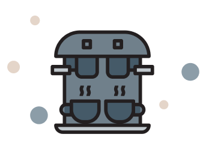

<ion-content>
  <ion-slides>
    <ion-slide>
      <div class="slide">
        
        <h2>Welcome To Brew Bros</h2>
        <p>
          This is the  <b>onboard intro</b> and will tell you all about Brew Bros and what we have to offer. Swipe to get started.
        </p>
        <form style="padding:15px;" #address="ngForm" (ngSubmit)="skipOnboard()"> 
          <ion-row>
            <ion-col size="12" size-lg>
              <p class="text-center text-white"><ion-button shape="round" expand="full" color="dark" type="submit">Skip Onboarding</ion-button></p>
            </ion-col>
        </ion-row>
        </form>
      </div>
    </ion-slide>

    <ion-slide>
      
      <h2>What is Brew Bros?</h2>
      <p>
        <b>Platter</b> is  built with ionic an open source SDK that enables developers to build high quality mobile apps
        with web technologies like HTML, CSS, and JavaScript.
      </p>
    </ion-slide>

    <ion-slide>
      
      <h2>Whay Brew Bros?</h2>
      <p>
        <b>Because why not</b> is a powerful set of services and features built on top of Ionic Framework that brings a
        totally new level of app development agility to mobile dev teams.
      </p>
    </ion-slide>

    <ion-slide>
      
      <h2>Ready to Order?</h2><br>
      <form style="padding:15px;" #address="ngForm" (ngSubmit)="onSubmit()"> 
        <ion-row>
         
          <ion-col size="12" size-lg>
            <p class="text-center"><ion-button shape="round" expand="full" color="dark" type="submit">Start Brewing!</ion-button></p>
          </ion-col>
      </ion-row>
      </form>
    </ion-slide>
  </ion-slides>
</ion-content>
